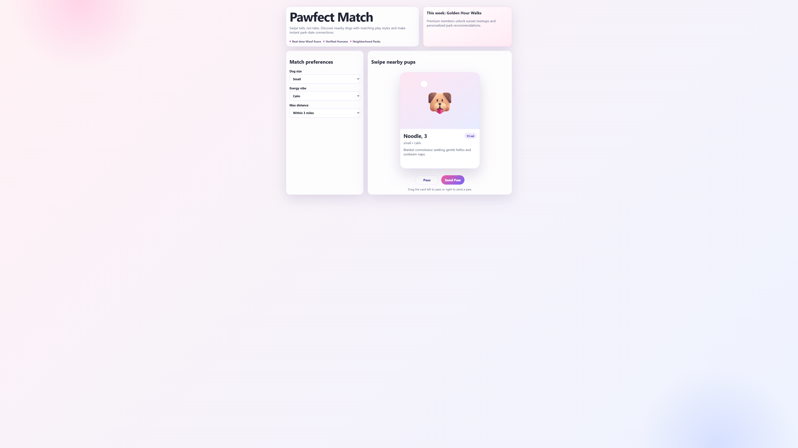
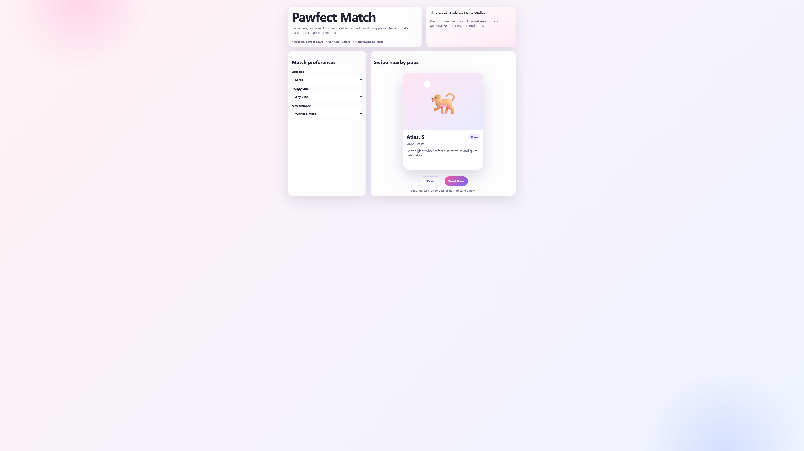

3 failed / 8 runs
Run 01
FailedThe 'Max distance' filter set to 'Within 3 miles' did not update the card, which still displays '13 mi'. This suggests the filter functionality might be broken or not applying correctly to the current card. Proceeding to test 'Pass' button.

Run 04
FailedThe 'Max distance' filter is set to 'Within 8 miles', but the displayed card shows '11 mi', which is outside the selected range. This indicates a potential bug in the filtering logic. Now testing 'Energy vibe' filter by selecting 'Calm'.
The 'Max distance' filter (set to 'Within 8 miles') is being ignored as the current card shows '11 mi'. The 'Dog size' and 'Energy vibe' filters seem to be working. Moving on to testing 'Pass' and 'Send Paw' interactions.

Run 06
FailedThe 'Max distance' filter is set to 'Within 8 miles', but the displayed card shows '11 mi', which is outside the selected range. This indicates a potential bug in the filter logic. Proceeding to test 'Dog size' filter.